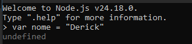
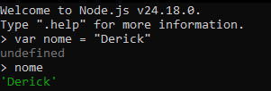
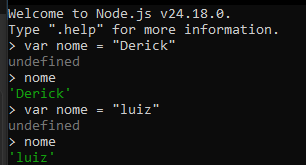
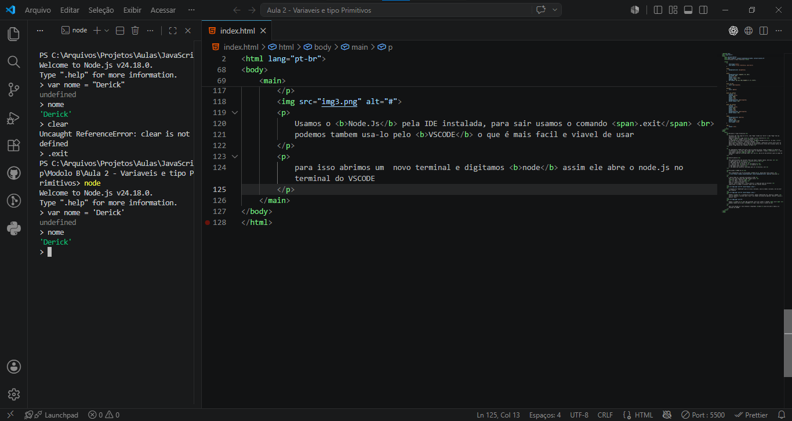
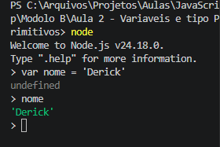
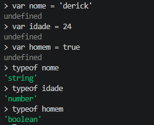

Variaveis e Tipos Primitivos
Variaveis são como vagas de carro, cada "Vaga" recebe seu "Carro" e cada "Vaga" tem sua identificação.
Imagine o seguinte a vaga A1 recebe o carro Carro1;
A vaga A2 recebe o carro Carro2;
na programação em JavaScrip estaria assim: Vaga A1 Recebe Carro1, ou seja, "A1 = Carro1" o sinal de "=" significa "Recebe".
Agora observe o seguinte, se a vaga A1 estiver ocupada é impossivel colocar outro carro na mesma vaga, sendo assim temos as opções de colocar um carro, tirar ele e colocar outro, ou deixar a vaga vazia com o comando "NULL"
Os computadores tambem são assim, mais ao inves de carros, usamos Dados dentro de Variaveis, ou seja, não criamos vagas no Computador, criamos Variaveis, e para isso usamos a palavra var
lembrando a regra de String, Bool, Int, etc, mas em JS tem diferença para as aspas em String
Identificadores
Para identificarmos uma variavel temos que seguir algumas regras, são elas:
1- Podem começar com letra, $ ou _
2- Não podem começar com numeros
3- é possivel usar letras ou números
4- É possivel usar acentos e simbolos
5- Não podem conter espaços
6- não podem usar palavras reservadas pelo JS (function, var)
Utilizando NODE JS
Para trabalharmos com JS utilizaremos Node JS, baixe pelo link a baixo:
download
A IDE do Node JS é parecido com python no CMD
para criar uma variavel pela IDE faremos assim:
var nome = "Derick"
obs.: var (Pois é uma variavel)
nome (é o nome da variavel)
"Derick" (entre aspas pois é Strig e Derick é o dado que esta na variavel)
sendo assim, se chamar a variavel "nome" ela nos retorna "Derick"

A resposta foi "Undefined" pois só criou a variavel, caso eu chame a variavel, ele nos dará uma resposta.

Podemos mudar o conteudo da variavel, apenas redefinindo ela, observe a imagem:
nela eu redefino a variavel para "Luiz" e ao chamar ela deixa de aparecer "Derick" e passa a mostrar "Luiz"

Usamos o Node.Js pela IDE instalada, para sair usamos o comando .exit
podemos tambem usa-lo pelo VSCODE o que é mais facil e viavel de usar
para isso abrimos um novo terminal e digitamos node assim ele abre o node.js no terminal do VSCODE

Zoom somente no terminal:

portanto, trabalharemos no terminal a partir do VSCODE para estudos, para sair do terminal é usando o .exit ou clicando na lixeira.
LEMBRE-SE sempre saia do terminal, se não voce abre milhões de terminais e seu pc fica super lento
Dicas
1- Letras Maiusculas e minusculas fazem a diferença
tome cuidado ao criar variavel, pois var A é diferente de var a, o Js reconhece a distinção de letras maiusculas e minusculas
2- Escolha nomes coerentes para as variaveis
tome cuidado ao escolher nome para as variaveis, não coloque nomes genericos, pois no fim das contas voce pode acabar se perdendo, por exemplo:
var x = "Derick"
var y = 21
var z = "Luiz"
var h = 22
a principio é "entendivel" que x é o nome do Derick e y sua idade, como tambem z é o nome luiz e 22 sua idade, mais em um codigo muito grande é dificil distinguir o que é cada coisa, seria muito melhor assim:
var nome1 = "Derick"
var idade1 = 21
var nome2 = "Luiz"
var idade2 = 22
veja como ficou muito mais entendivel o que significa o que, para deixar ainda melhor pode comentar o codigo dizendo o que cada nome significa.
Tipos de Dados
após entender o que é variaveis, temos que entender que elas guardam tipos de dados, são eles:
- string (str): "Derick", "luiz", "Azul" (Palavras)
- number (num): 1, 2, 0.6, -23,.... (números)
- boolean (bool): True, False
- undefined (undefined): quando uma variável é criada, mas ainda não recebeu um valor
- null (null): representa a ausência intencional de valor
- bigint (bigint): números inteiros muito grandes, maiores que o limite do number
- symbol (symbol): valores únicos e imutáveis, usados para identificadores especiais
- object (obj): estruturas que guardam dados em pares de chave e valor, como arrays e funções
para ajudar com os tipos podemos usar o typeof, observe:
irei definir uma variavel com numero, string e boolean e usarei o typeof em cada uma delas, a ideia é que o typeof me diga qual o tipo de dado é aquele.
